Префектура Ниигата · Агано, онсэн Мурасуги · рёкан
Рёкан «Кадоя» на онсэне Мурасуги: радоновая вода, свой рис и рыба Японского моря
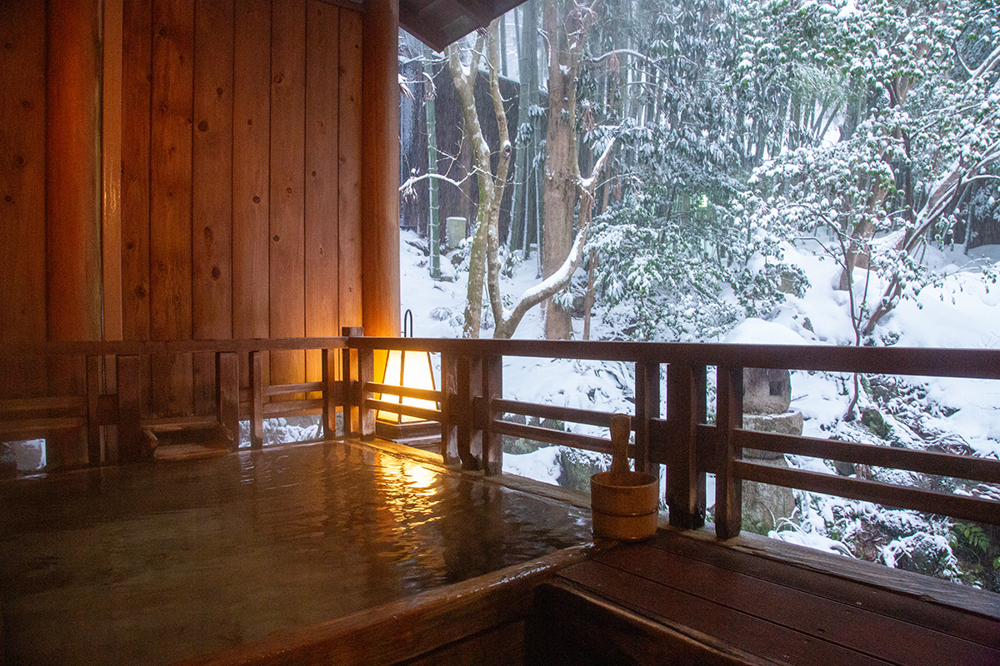
У подножия гор Годзу стоит рёкан, который начинался с крестьянского дома, где сдавали комнаты тем, кто приезжал лечиться. Сюда едут за радоновой водой и за едой, которую хозяева выращивают, собирают и покупают сами, и остаются хотя бы на две ночи.
Онсэн
Один из трёх радиевых источников Японии
Онсэн Мурасуги лежит у подножия гор Годзу в городе Агано. Вместе с соседними источниками Дэю и Имаита он входит в группу онсэнов Годзу. Первую купальню здесь открыли в 1335 году. По содержанию радона вода Мурасуги входит в число самых богатых радоном в стране, и её называют одним из трёх главных радиевых источников Японии.
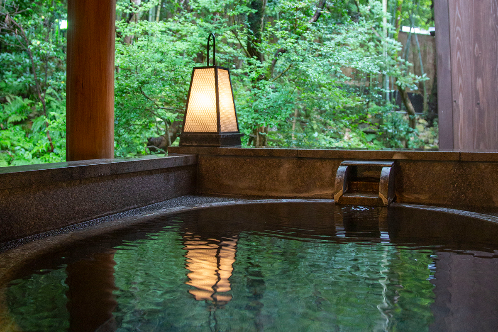
Сюда веками приезжали на тодзи, долгое лечебное купание: радоновую воду считают полезной для вегетативной нервной системы и иммунитета. Простой радиоактивный источник согревает тело и, как говорят, поддерживает силы клеток. Радон легко уходит из воды в воздух, поэтому лучше сочетать купание, питьё воды и вдыхание пара.
Лечебные купания требуют времени, и стоит остаться хотя бы на две ночи. Когда никуда не надо ехать, появляется целый свободный день: можно купаться столько, сколько хочется, и есть не торопясь.
История
Крестьянский дом, который стал рёканом
Рёкан «Кадоя» основан в 1890 году. Когда в Мурасуги ещё не было ни одной гостиницы, крестьянская семья сдавала комнаты тем, кто приезжал лечиться на воды. Хозяева рёкана и в 2024 году остаются крестьянами.
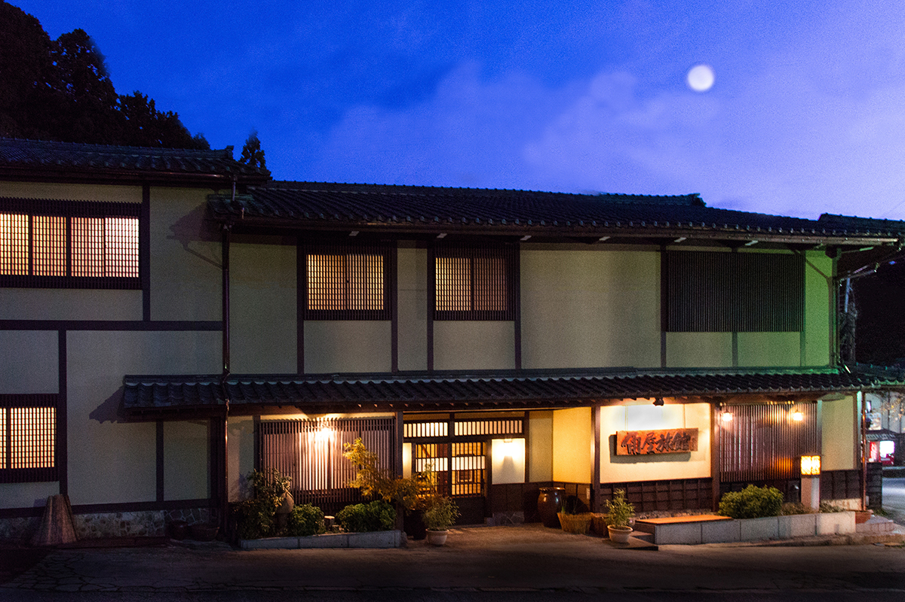
На собственном поле рёкан выращивает рис косихикари и овощи, с уменьшенным количеством пестицидов, начиная с подготовки земли. Урожай каждый день идёт на кухню. Рис хранят неочищенным и шлифуют раз в неделю, а за столом гость сам выбирает, каким его есть: белым, бурым или в виде рисовой каши, по самочувствию и вкусу.
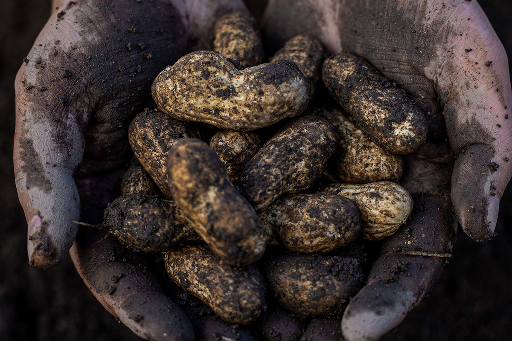
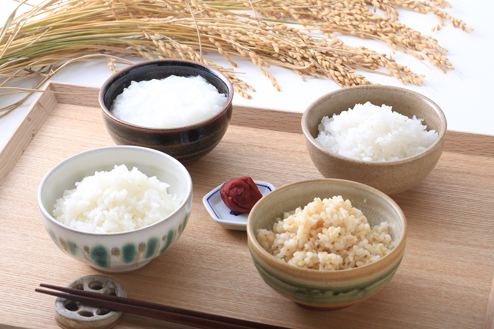
Каждое утро в пять часов шеф-повар едет на рыбный рынок и сам выбирает рыбу Японского моря. Он же ходит по окрестным горам за дикими травами сансай и грибами. Бамбуковые ростки растут в собственной роще рёкана, и в сезон их собирают три раза в день, чтобы подать в самую вкусную минуту.
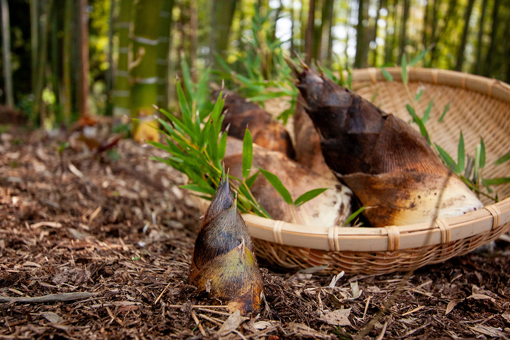
В 2023 году рёкан получил премию Niigata Gastronomy Award в разделе рёканов и отелей: награду за культуру онсэнов. Рёкан отметили за кухню, полную даров сатоямы, и сердечный приём.
Купальни
Четыре ванны только для своих
В «Кадоя» четыре отдельные купальни, две под открытым небом и две в доме. Каждую занимают только своей компанией, гости рёкана пользуются ими бесплатно и сколько угодно раз, днём и ночью. Все они разные, так что можно устроить себе маленький тур по онсэнам, не выходя из рёкана. Воду в источнике подогревают. В открытых купальнях, где смотрят на горный пейзаж, она погорячее, а во внутренних прохладнее, чтобы сидеть долго и спокойно дышать.
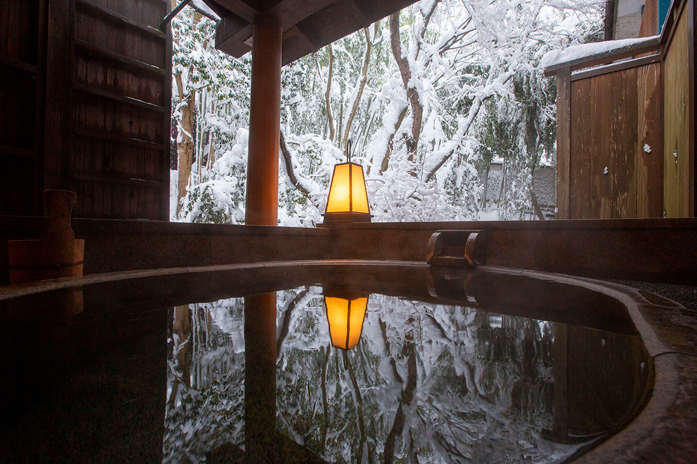
Радий здесь содержат даже скалы. Гранит «мурасуги-иси» достают из-под земли, и одна из ванн выточена из этого камня: круглая, гладкая, приятная на ощупь.
В купальне «Сато-но ю» потолок сделали низким, чтобы пар от воды не уходил. Внутри стоит густой туман, и купаться здесь нужно не спеша, вдыхая этот пар.
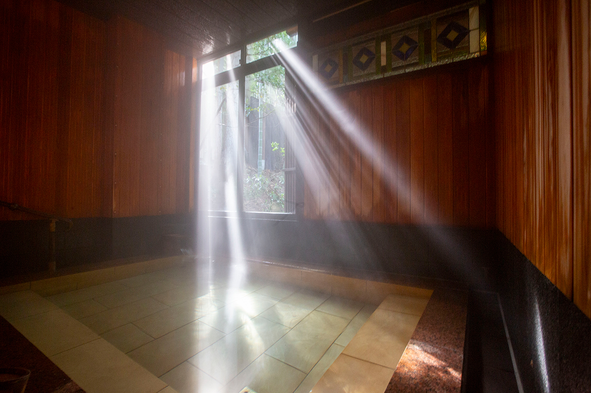
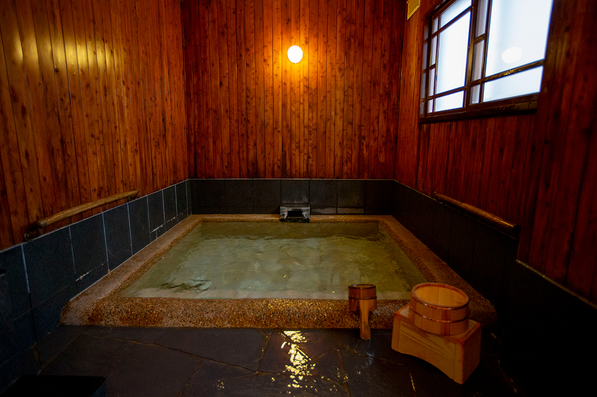
Кухня
Есть досыта, но по-своему
Чтобы восстановить силы, по мнению хозяев, еду нужно не урезать, а есть как следует. Здесь больше десяти вариантов ужина: курсы с морепродуктами побережья Хокурику, курсы, где главное сезонные овощи, и уменьшенные. Курс можно менять от вечера к вечеру. Тем, кто на долгом отдыхе не может много есть, предложат «хикаэмэ», половинную порцию. Для тех, кто следит за солью и жиром, есть «сэйё-гохан», спокойный курс с овощами, водорослями и морепродуктами. С гостями, у которых ограничения в еде, подробно обсуждают меню, чтобы на столе не оказалось ничего запретного.
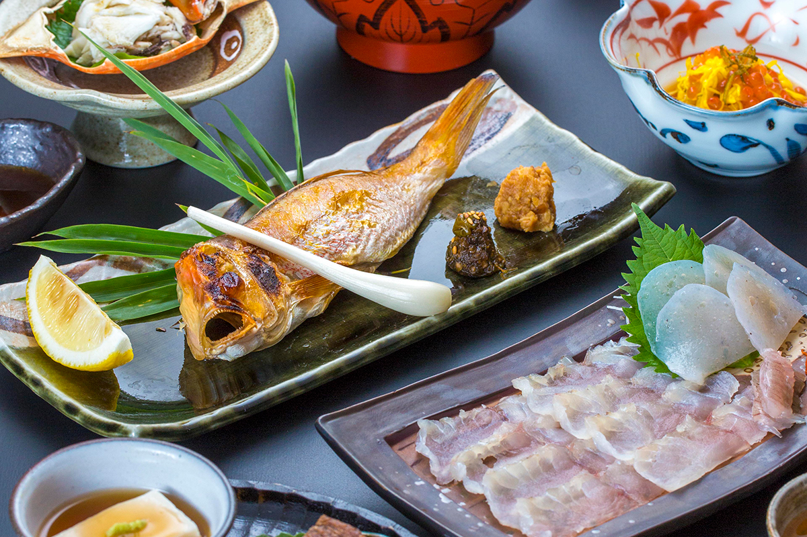
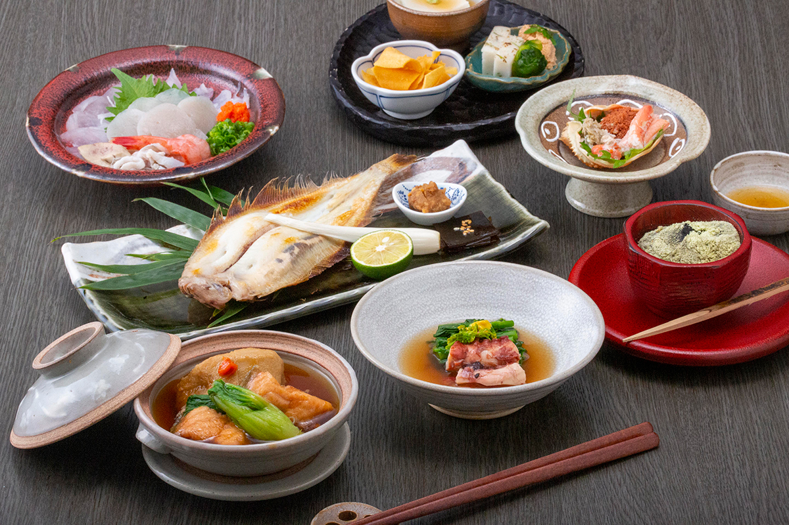
Свои поиски хозяева распространили и на сладкое. В середине долгого отдыха стоит заказать фирменный анмицу с шариками сиратама и кремом. Шарики лепят только после заказа, из рисовой муки Ниигаты и воды родника, что бьёт в саду рёкана. Агар готовят по секретному рецепту дома, а у агара изумительная нежная текстура. Чёрный сироп хозяин варит из тростникового сахара, который сам искал на островах Окинавы, а сладкую фасолевую пасту для «Кадоя» делают на заказ из адзуки с равнины Токати на Хоккайдо. Этот анмицу придуман только для гостей рёкана.
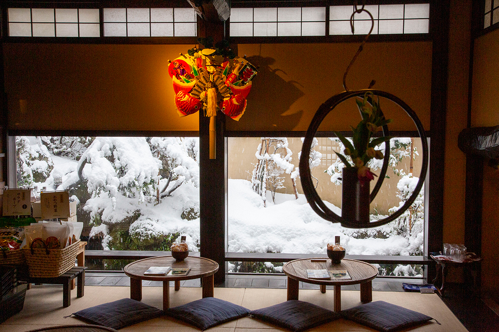
Номера
Десять комнат
В рёкане десять номеров. Есть классические японские комнаты, есть комнаты с кроватями и комнаты с очагом ирори. На стенах висят картины, связанные с краем Этиго, старым названием Ниигаты. Номера разные по цене, но в каждом то же неспешное деревенское настроение.
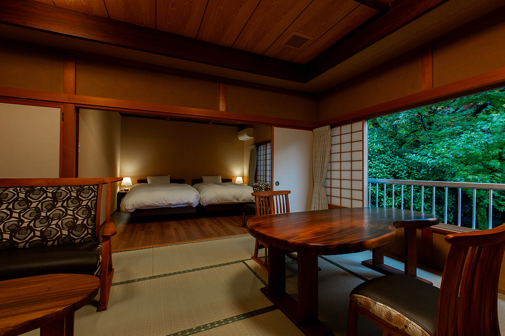
Ужин и завтрак японские, их подают в столовой или в номере. По желанию готовят и обед. В 2024 году ночь с ужином и завтраком стоила от 22 000 иен с налогом и сервисом.
Рёкан «Кадоя»
- Адрес
- префектура Ниигата, Агано, Мурасуги, 4631-1
- Телефон
- +81 250-66-2221 (8:00–21:00)
- Номера
- 10
- Цены / Вход
- от 22 000 иен за ночь с ужином и завтраком (с налогом и сервисом)
- Заезд / выезд
- 15:00 / 10:00
- Как добраться
- на машине около 10 минут от развязки Ясуда скоростной дороги Бан-Эцу; от станции JR Суйбара около 20 минут на машине
- Сайт
- kadoyasan.com
Округа
Куда пойти из рёкана
«Рёкан для нас это вход в здешние места. Крестьяне в округе выращивают прекрасные овощи, делают умэбоси, солят такуан. Мы сами сажаем рис и овощи, но всё, что подаём, вырастить не можем»
хозяева рёкана «Кадоя»
Поэтому рёкан полагается на прилавок «Юки фурэаи», куда местные крестьяне приносят свои овощи. Тут же, у онсэна, работает тофу-лавка «Каваками тофу», открытая в 1929 году. И там и там можно купить продукты с собой и дома вспомнить вкус Мурасуги.
Прилавок «Юки фурэаи»
- Адрес
- префектура Ниигата, Агано, Мурасуги, 3946-163
- Телефон
- +81 250-66-2299
- Часы работы
- 8:00–15:00 (пока не разберут товар)
- Выходные
- вторник
«Каваками тофу»
- Адрес
- префектура Ниигата, Агано, Мурасуги-онсэн, 4589
- Телефон
- +81 250-66-2155
- Часы работы
- 8:00–18:00, по субботам, воскресеньям и праздникам с 7:00
- Выходные
- без выходных
Если хочется поесть вне рёкана, хозяева советуют столовую «Ямасимидзу» у соседнего онсэна Дэю. Здесь подают и лапшу удон, и комплексные обеды, но край славится рисом, поэтому главное блюдо здесь камамэси, рис, сваренный в маленьком котелке. Его готовят из косихикари из Сасагами, с устрицами, гребешками, дикими травами и другими продуктами сезона.
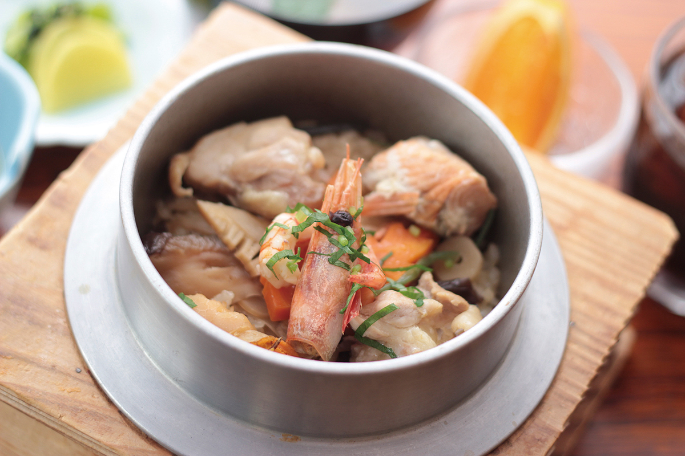
Столовая «Ямасимидзу»
- Адрес
- префектура Ниигата, Агано, Дэю, 1178
- Телефон
- +81 250-63-0399
- Часы работы
- 11:00–15:00 (последний заказ 14:00), 17:00–21:00 (последний заказ 20:00)
- Выходные
- вторник, последняя среда месяца
Посуду для рёкана делает мастерская «Миясита-гама», где обжигают керамику сасагами-яки. Гончар работает с местной глиной и разными приёмами: роспись, обжиг без глазури, лепка руками. В его чашках, по словам хозяев, живёт тот же покой, что и в деревне среди рисовых полей.
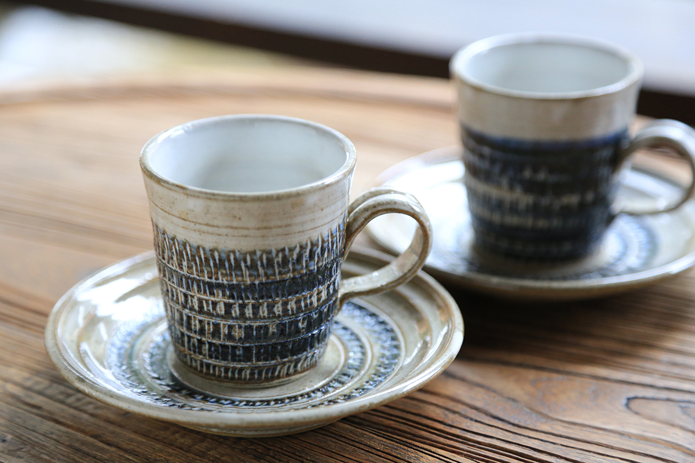
Мастерская «Миясита-гама»
- Адрес
- префектура Ниигата, Агано, Миясита, 968-4
- Телефон
- +81 250-63-2422
- Часы работы
- 8:00–17:00
- Выходные
- нерегулярные
Прямо рядом с мастерской стоит святилище Асаиино, которому около 1700 лет. Здесь почитают Хомуда-вакэ-но микото, то есть императора Одзина, легендарного правителя Японии (по преданию, 270–310 годы), бога щедрого и сильного. За святилищем лежит круглый камень около полутора метров в диаметре: считается, что прикоснувшийся к нему получает силы. Местные любят это место как тихое святилище, о котором знают немногие.
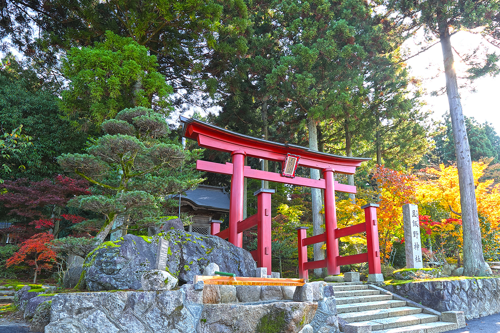
Святилище Асаиино
- Адрес
- префектура Ниигата, Агано, Миясита, 968
- Телефон
- +81 250-62-4755
- Часы работы
- территория открыта всегда